| My role | Sole UX/UI designer, from audit to dev-ready designs |
| Team | Product owners, project managers, development teams |
| Users | Bondholders managing their Israel Bonds, and admins reviewing and approving their requests |
| Platforms | Desktop web + responsive mobile |
| Tools | Figma |
| Outcome | Shipped to production. Developers and product owners called it the upgrade the platform needed. |
The problem
Bond Centre is where people who own State of Israel Bonds check their portfolio, update their details and submit forms. The existing app felt large, clunky and hard to use:
- Cognitive overload: too many loans and too much data crammed onto one screen
- Navigation that didn't make sense: one long menu mixing everyday tasks with account settings
- Weak admin controls: staff had no clear way to review, approve or reject what bondholders submitted
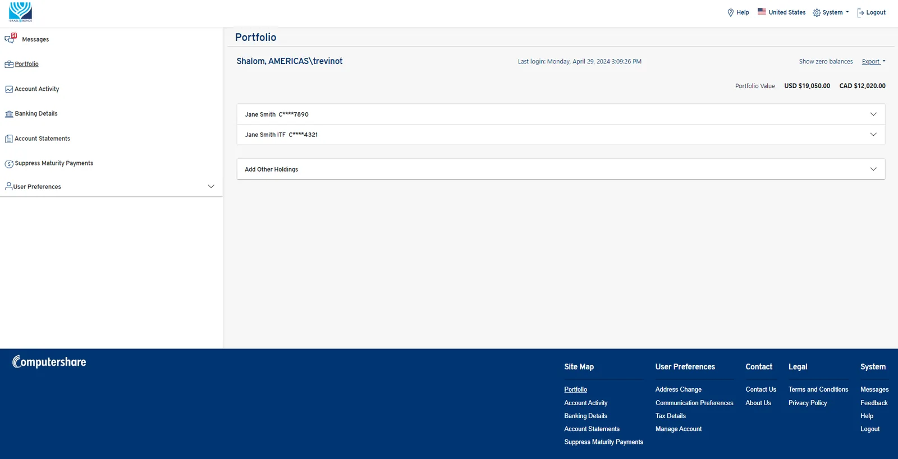
Two users, two jobs
| Bondholders | Admins |
|---|---|
| See what they own and what it's worth | Review submitted forms and documents |
| Download statements and tax forms | Approve or reject requests |
| Update banking, address and communication preferences | Keep bondholders informed of the status |
Designing for both meant every flow had two sides: what the bondholder does, and what the admin sees next.
1. Navigation: separating doing from managing
I tested one long left-hand menu against a split navigation:
- Left: the tasks you came to do (Portfolio, Payments & Transactions, Banking Details, Account Statements, Suppress Maturity Payment)
- Top right: everything about you (Alerts, Messages, country, User Preferences, Help & FAQ, Logout)
The split navigation won. With everything stacked on the left, people found it busy and confusing. Splitting it follows a pattern people already know from the apps they use every day.
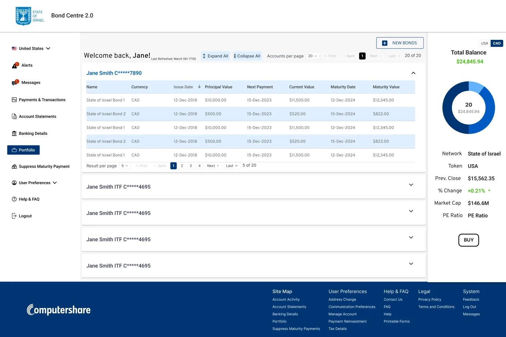
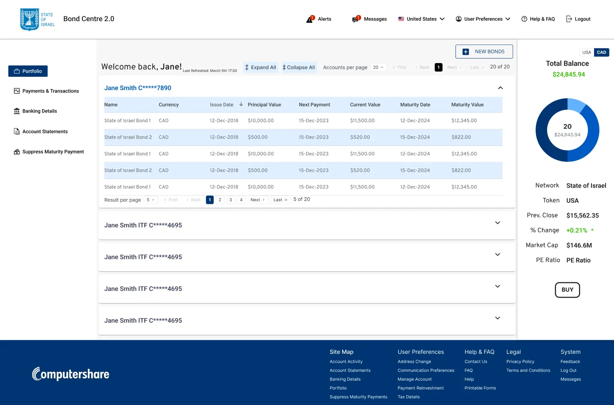
2. Taming the data: accordions + pagination
Some bondholders hold many bonds across many accounts. Instead of showing everything at once:
- Each account is an accordion, closed until you need it, with Expand all / Collapse all
- Inside, bonds sit in a short, paginated table, and users choose how many rows to see
- A summary panel shows the total balance at a glance, with a USD / CAD toggle
The bondholder decides how much information is on screen, not the system.
3. Wizards for multi-step tasks
Updating communication preferences across several accounts used to be one dense form. I turned it into a 3-step wizard:
- Select accounts: checkboxes, with select-all
- Choose preferences: email or postal mail for tax statements, bond statements and other mail
- Review the summary: "Your information is not complete until you click Submit"
…followed by a clear success confirmation. A stepper shows where you are, and you can always go back.
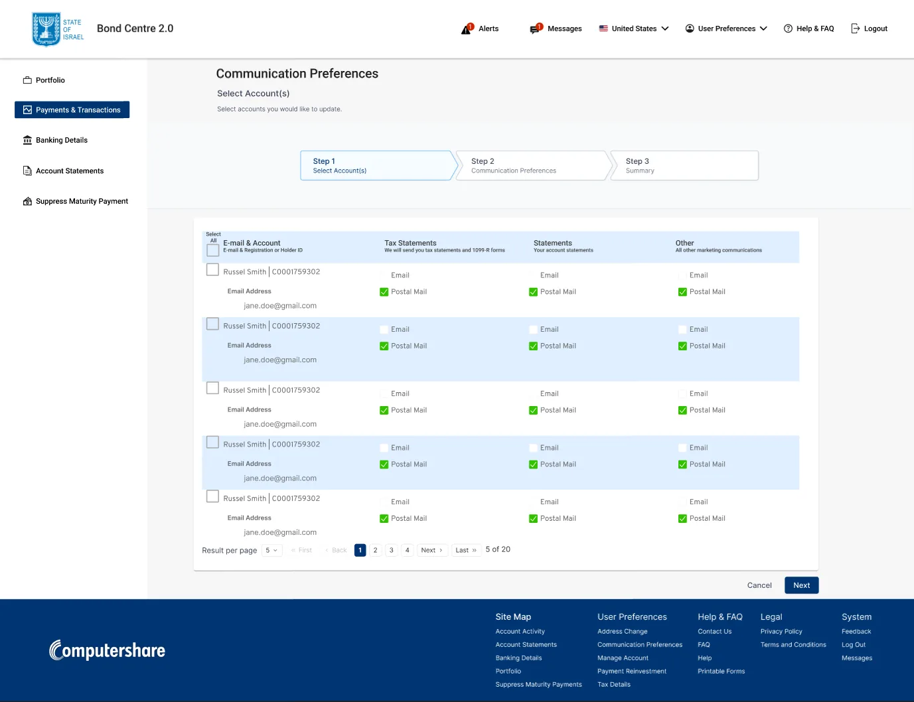
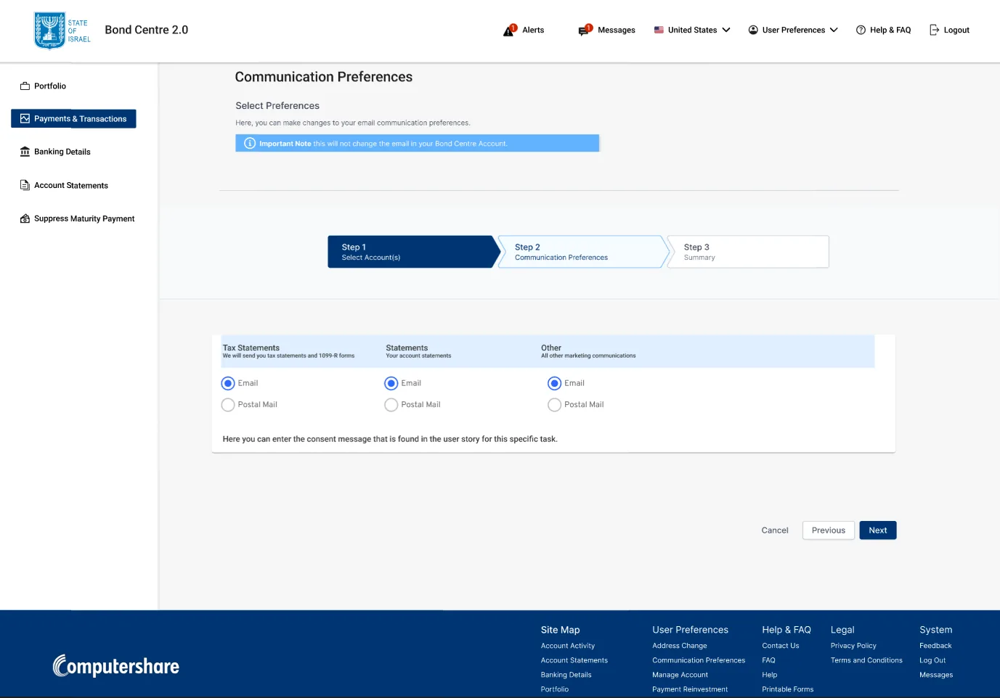
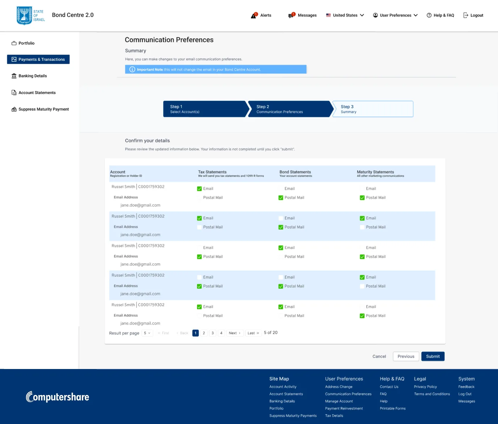
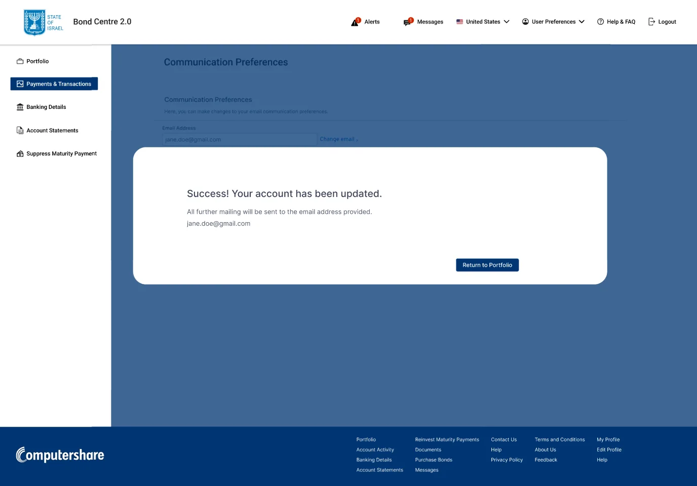
4. Forms and uploads without losing your place
Printable forms are grouped into accordions: US holders, international holders, tax forms, direct registration, international currency. Bondholders can view a form and upload the signed copy right inside the section: drag and drop, a progress bar, an "Uploaded ✓" state, and a Remove file option if they picked the wrong one.
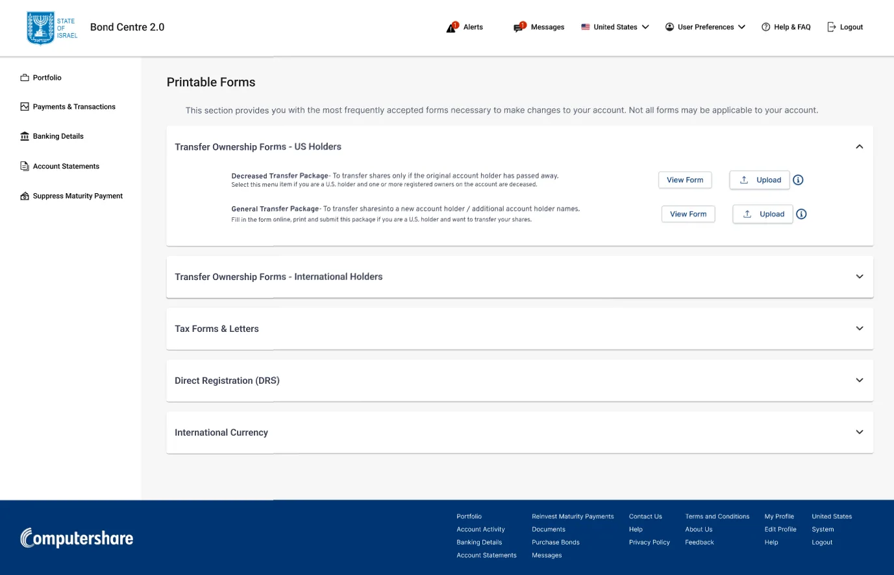
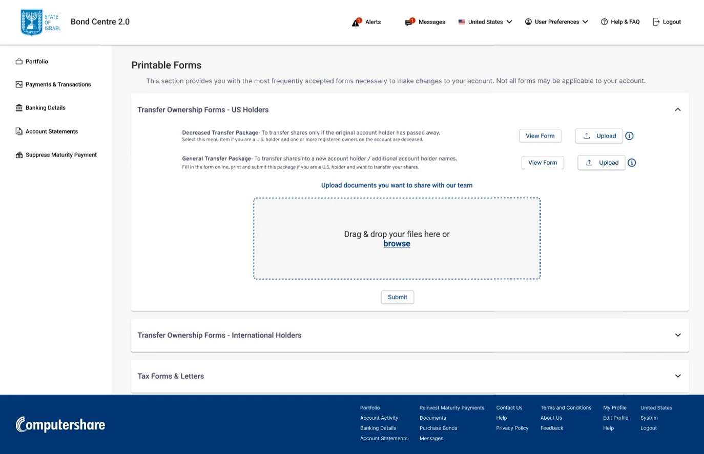
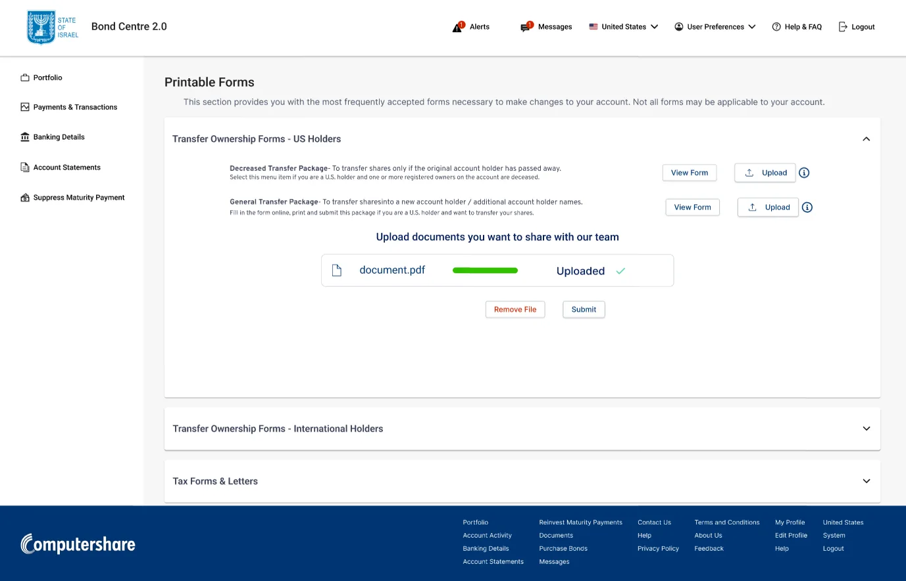
5. Admin controls that close the loop
When a bondholder submits a form, the admin sees it marked Proposed, with Preview, Approve, Reject and Cancel actions. The bondholder then sees the result (for example, Rejected) right next to the form, with an info icon explaining what happened. No more guessing whether a request went through.
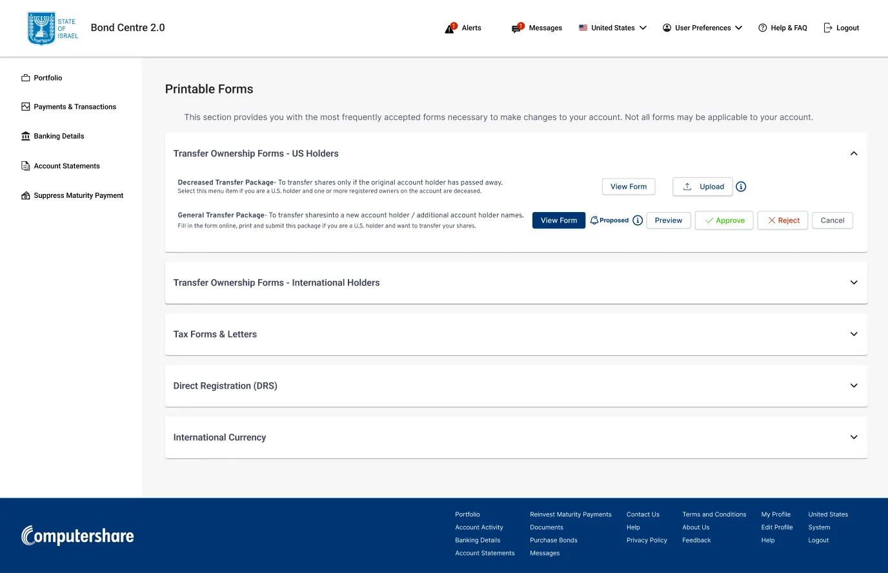
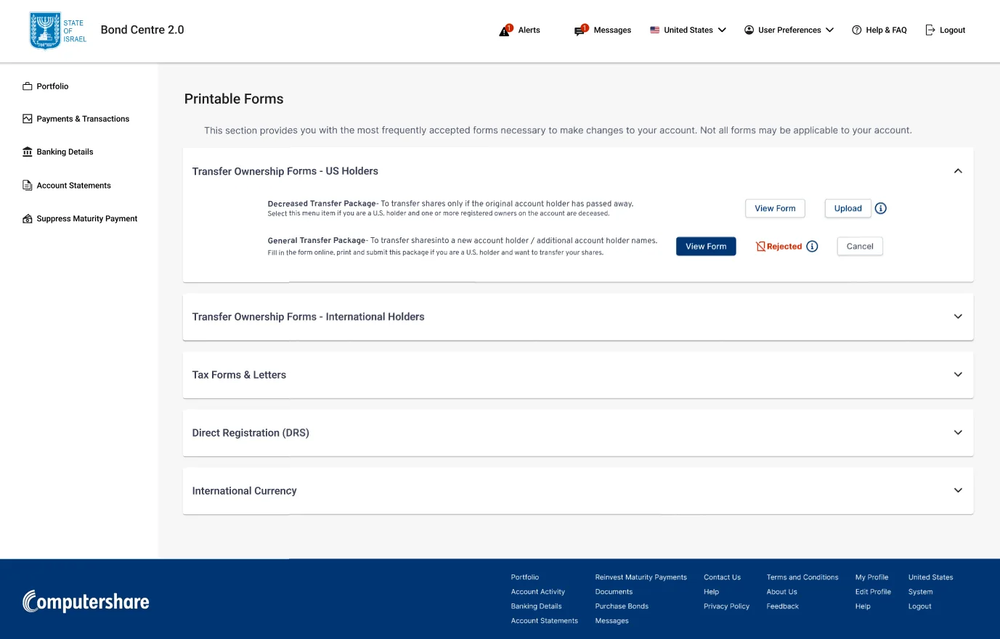
6. Designed for every screen
I designed the full product for desktop and mobile (iOS and Android sizes): portfolio, tax details, printable forms, communication preferences, FAQ, inbox, online support, banking details and address change.
For the mobile Inbox, I compared two layouts: - A: message list and message detail on separate screens - B: message detail stacked above the list
A won: it was more intuitive, because it works like the email apps people already use.
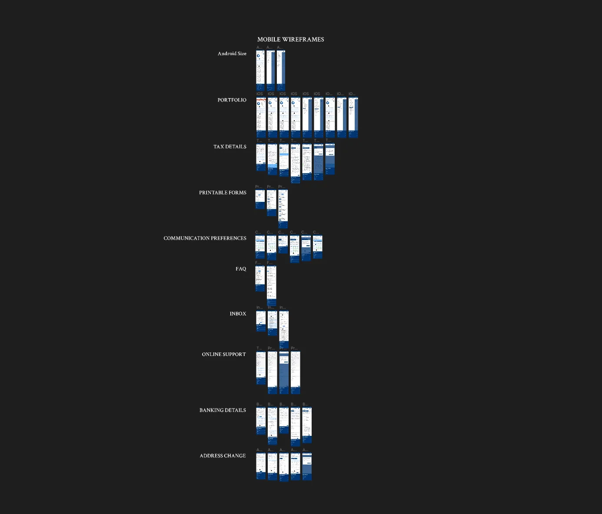
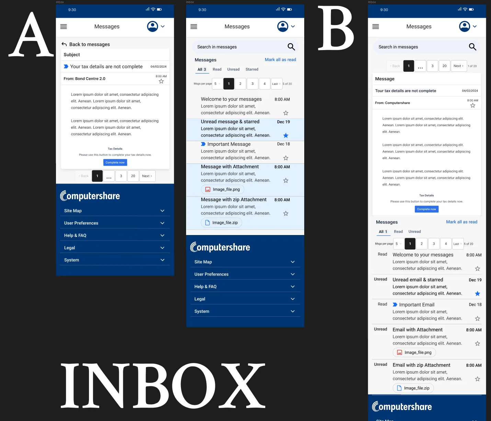
Outcome
Bond Centre 2.0 shipped to production. The development team and product owners were excited about the upgrade: a cleaner, calmer, more organized experience for bondholders, and real controls for admins.
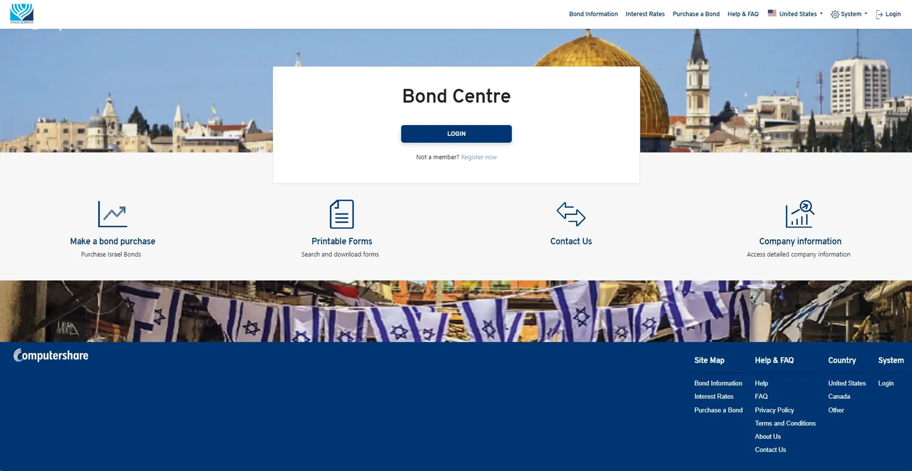
I was part of a company-wide layoff shortly after launch, so I wasn't able to collect post-launch usage data.
What I learned
- Reduce before you redesign. Most of the "clutter" problem was solved by deciding what doesn't need to be visible yet: accordions, pagination, wizards.
- Familiar beats clever. The split navigation and Inbox A won because they match patterns people already trust.
- Every action needs a visible result. Upload states, wizard summaries and approval statuses turned "Did that work?" into "Done."
- Next time: I'd set up success metrics before launch (task completion, support tickets, time to submit a form), so the impact is measurable even if I'm not there to see it.